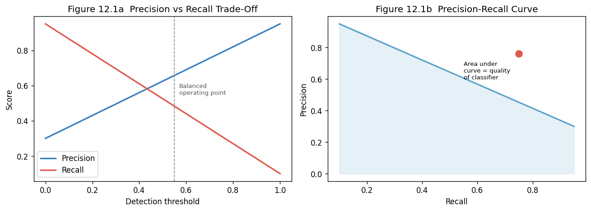

12. Chapter 12: Intrusion Detection and Prevention Systems#
“An alarm that goes off every time the wind blows is not a security system.” security aphorism
12.1. Learning Objectives#
After completing this chapter, you will be able to:
Distinguish intrusion detection from intrusion prevention and network-based from host-based.
Explain signature-based, anomaly-based, and stateful-protocol analysis detection methods.
Describe false positives, false negatives, and the precision/recall trade-off.
Explain how Snort rules are structured and write a basic rule.
Describe Security Information and Event Management (SIEM) and its role.
Explain User and Entity Behaviour Analytics (UEBA) and how it detects insider threats.
Describe threat hunting and how it differs from reactive alerting.
Interpret a detection alert and begin a triage workflow.
12.2. Key Terms#
IDS: Intrusion Detection System; monitors and alerts on suspicious activity.
IPS: Intrusion Prevention System; actively blocks suspicious traffic in line.
NIDS: Network-based IDS; monitors network traffic.
HIDS: Host-based IDS; monitors a single host’s activity.
Signature: a pattern matched against known attack traffic or behaviour.
Anomaly detection: flagging deviations from a baseline of normal behaviour.
False positive (FP): an alert fired on benign activity.
False negative (FN): a real attack that does not trigger an alert.
Precision: TP / (TP + FP); fraction of alerts that are real attacks.
Recall: TP / (TP + FN); fraction of real attacks that trigger an alert.
SIEM: Security Information and Event Management; aggregates and correlates log data.
SOAR: Security Orchestration, Automation, and Response.
UEBA: User and Entity Behaviour Analytics.
Threat hunting: proactive search for adversary activity not caught by automated alerting.
12.3. Detection System Types#
12.3.1. Network-Based IDS and IPS#
NIDS sensors are placed at strategic network points: the internet perimeter, between zones, and at internal aggregation points. They receive a copy of network traffic (via a SPAN port or network tap) and inspect it against rules. An IPS is placed inline and can drop or reset traffic that matches rules, at the cost of adding latency and creating a potential failure point. Many organisations deploy IDS out-of-band and use the firewall or NGFW for actual blocking.
12.3.1.1. Placement Considerations#
NIDS inside the firewall sees decrypted traffic on the internal network but misses encrypted external traffic. NIDS outside the firewall sees all inbound traffic but cannot inspect encrypted payloads. TLS inspection at the firewall or proxy allows the IDS to see decrypted traffic without sitting outside the firewall, at the cost of certificate management complexity.
12.3.2. Host-Based IDS#
HIDS monitors local system activity: file system changes (integrity monitoring), process creation, registry modifications, login events, and system calls. Examples include OSSEC, Wazuh, and commercial endpoint detection and response (EDR) tools. HIDS is not affected by network-level encryption because it observes behaviour on the host after decryption.
12.4. Detection Methods#
12.4.1. Signature-Based Detection#
Signature detection matches traffic or behaviour against a database of known attack patterns. Snort, Suricata, and Zeek support signature-based detection. Advantages: low false-positive rate for known attacks, deterministic, and auditable. Limitations: zero-day attacks have no signature; attackers can modify payloads to evade known signatures; high maintenance burden as signatures must be continuously updated.
12.4.1.1. Snort Rule Anatomy#
A Snort rule has two parts: the rule header and the rule body.
alert tcp any any -> 192.168.1.0/24 80 (msg:"GET /etc/passwd"; content:"/etc/passwd"; sid:1000001; rev:1;)
alert: action (alert, log, drop, reject).tcp: protocol.any any: source IP and port.->: direction.192.168.1.0/24 80: destination network and port.msg: human-readable alert message.content: byte pattern to match in payload.sid: unique rule identifier.rev: revision number.
12.4.2. Anomaly-Based Detection#
Anomaly detection establishes a baseline of normal behaviour and alerts on deviations. A user who logs in from a new country, accesses 10x their normal volume of files, or connects at 3 AM when they never have before triggers an anomaly alert. Machine learning models (isolation forest, autoencoders) are used for complex baseline modelling.
12.4.2.1. The Precision/Recall Trade-Off#
Anomaly detection suffers from high false-positive rates because legitimate behaviour is variable. Tightening the anomaly threshold reduces false positives but increases false negatives. A low- sensitivity model misses real attacks (high FN rate); a high-sensitivity model alerts on benign activity constantly (high FP rate). Effective tuning requires labelled historical data and business context about what is truly abnormal.
12.4.3. Stateful Protocol Analysis#
Stateful protocol analysis enforces expected protocol behaviour at the state-machine level. An HTTP parser flags requests that deviate from RFC 7230, such as oversized headers or unusual method verbs, even if no signature matches. This catches protocol exploitation and evasion techniques that modify known payloads to avoid content matching.
12.5. SIEM and Log Aggregation#
12.5.1. SIEM Architecture#
A SIEM collects logs from every source in the environment: firewalls, endpoints, servers, applications, cloud APIs, network devices, and authentication systems. It normalises them into a common schema, stores them long-term, and correlates events across sources to detect complex attack chains that no single source could identify.
12.5.1.1. Detection Use Cases#
A SIEM correlation rule firing on: failed login to account A, successful login to account A 5 minutes later from a different IP, followed by file access to a sensitive share, followed by data transfer to an external IP captures the Mitre ATT&CK pattern for credential stuffing, initial access, and exfiltration. No individual event is alarming; the sequence is.
12.5.2. SIEM Challenges#
A SIEM that receives 100,000 events per second and generates 10,000 alerts per day has an alert-fatigue problem. Analysts who cannot process the alert volume begin to ignore alerts. Effective SIEM operation requires: tuned correlation rules that reduce noise, prioritisation by asset criticality, automated enrichment (IP reputation, known-bad hashes), and analyst workflows that handle the highest-priority alerts first.
12.6. UEBA and Threat Hunting#
12.6.1. User and Entity Behaviour Analytics#
UEBA applies statistical models to user, host, and network entity behaviour over time. It detects: accounts exhibiting credential-stuffing patterns, service accounts behaving like user accounts, hosts communicating with unusual peers, and data access volumes that deviate from historical baselines. UEBA is particularly effective against insider threats and compromised accounts whose credentials are valid but whose behaviour is abnormal.
12.6.2. Threat Hunting#
Threat hunting is the proactive, hypothesis-driven search for adversary activity that has not triggered automated alerts. A hunt starts with a hypothesis (e.g., “assume an attacker has compromised a service account and is using it for lateral movement”) and searches for evidence that confirms or disproves it. Hunters use raw log data, threat intelligence, and knowledge of adversary TTPs rather than relying on pre-written correlation rules.
12.6.2.1. Hunt Methodology#
Develop a hypothesis based on threat intelligence, recent incident data, or MITRE ATT&CK.
Define the data sources that would contain evidence if the hypothesis is true.
Query those data sources for the expected indicators.
Analyse results, adjusting the query iteratively.
Document the hunt, its findings, and any detection gaps identified.
12.7. Why This Matters#
An IDS is only as good as its alerting, and alerting is only as good as the analyst who responds. The most sophisticated SIEM is worthless if alerts go unread. Effective detection requires tuned rules, prioritised alerts, trained analysts, and well-practised response workflows. The measure of a detection capability is not the number of rules deployed but the mean time to detect a real intrusion. World-class programmes achieve MTTD measured in hours or days; many organisations discover breaches weeks or months after initial compromise.
12.8. News in Focus#
Post-incident analysis of major breaches has repeatedly shown that the intrusion was detectable much earlier than it was discovered. Indicators including unusual authentication patterns, anomalous data transfers, and new scheduled tasks were present in logs that the organisation collected but did not analyse in real time. These findings drive investment in SIEM tuning and SOC staffing: collecting logs is the floor, not the ceiling, of a detection capability.
# Chapter 12 -- Detection metrics: precision, recall, ROC and Snort rule simulator
import matplotlib
matplotlib.use('Agg')
import matplotlib.pyplot as plt
import numpy as np
from io import BytesIO
from IPython.display import display, Image
# ── Precision / Recall metrics ────────────────────────────────────────────────
def metrics(tp, fp, fn):
precision = tp / (tp + fp) if (tp + fp) > 0 else 0
recall = tp / (tp + fn) if (tp + fn) > 0 else 0
f1 = 2 * precision * recall / (precision + recall) if (precision + recall) > 0 else 0
fpr = fp / (fp + (100 - tp - fn)) if (fp + (100 - tp - fn)) > 0 else 0
return precision, recall, f1, fpr
configs = [
("Signature-only (tight)", 40, 5, 60),
("Anomaly (loose)", 75, 40, 25),
("Tuned SIEM", 68, 12, 32),
("ML UEBA", 80, 20, 20),
]
print(f"{'Configuration':<30} {'Precision':>10} {'Recall':>10} {'F1':>8}")
print("-" * 62)
for name, tp, fp, fn in configs:
p, r, f1, fpr = metrics(tp, fp, fn)
print(f"{name:<30} {p:>10.2%} {r:>10.2%} {f1:>8.2%}")
# ── Precision-Recall trade-off visualisation ──────────────────────────────────
thresholds = np.linspace(0, 1, 50)
precision_curve = 0.3 + 0.65 * thresholds
recall_curve = 0.95 - 0.85 * thresholds
fig, axes = plt.subplots(1, 2, figsize=(11, 4))
axes[0].plot(thresholds, precision_curve, label="Precision", color="#3a7ebf", lw=2)
axes[0].plot(thresholds, recall_curve, label="Recall", color="#e05a4e", lw=2)
axes[0].axvline(0.55, color="#888", ls="--", lw=1)
axes[0].text(0.57, 0.55, "Balanced\noperating point", fontsize=8, color="#555")
axes[0].set_xlabel("Detection threshold"); axes[0].set_ylabel("Score")
axes[0].set_title("Figure 12.1a Precision vs Recall Trade-Off"); axes[0].legend()
axes[1].plot(recall_curve, precision_curve, color="#5ba3cc", lw=2)
axes[1].fill_between(recall_curve, precision_curve, alpha=0.15, color="#5ba3cc")
axes[1].scatter([0.75], [0.76], color="#e05a4e", zorder=5, s=80)
axes[1].text(0.55, 0.6, "Area under\ncurve = quality\nof classifier", fontsize=8)
axes[1].set_xlabel("Recall"); axes[1].set_ylabel("Precision")
axes[1].set_title("Figure 12.1b Precision-Recall Curve")
plt.tight_layout()
_buf = BytesIO()
plt.savefig(_buf, format="png", dpi=120, bbox_inches="tight")
plt.close(); _buf.seek(0)
display(Image(data=_buf.read()))
# ── Simple Snort rule simulator ───────────────────────────────────────────────
print("\n=== Snort Rule Simulator ===")
def snort_match(rule_content, payload):
return rule_content.lower() in payload.lower()
rules = [
dict(sid=1001, msg="Possible /etc/passwd access via HTTP", content="/etc/passwd"),
dict(sid=1002, msg="SQL injection OR 1=1 pattern", content="OR 1=1"),
dict(sid=1003, msg="XSS script tag", content="<script>"),
dict(sid=1004, msg="Nmap default scan UA", content="Nmap Scripting Engine"),
]
payloads = [
"GET /index.html HTTP/1.1",
"GET /../../etc/passwd HTTP/1.1",
"POST /login username=admin'%20OR%201=1%20-- HTTP/1.1",
"GET /search?q=<script>alert(1)</script> HTTP/1.1",
"GET /page HTTP/1.1\r\nUser-Agent: Nmap Scripting Engine",
]
for payload in payloads:
matched = [r for r in rules if snort_match(r["content"], payload)]
status = f"ALERT: {', '.join(r['msg'] for r in matched)}" if matched else "NO MATCH"
print(f" {payload[:55]!r:<57} -> {status}")
Configuration Precision Recall F1
--------------------------------------------------------------
Signature-only (tight) 88.89% 40.00% 55.17%
Anomaly (loose) 65.22% 75.00% 69.77%
Tuned SIEM 85.00% 68.00% 75.56%
ML UEBA 80.00% 80.00% 80.00%

=== Snort Rule Simulator ===
'GET /index.html HTTP/1.1' -> NO MATCH
'GET /../../etc/passwd HTTP/1.1' -> ALERT: Possible /etc/passwd access via HTTP
"POST /login username=admin'%20OR%201=1%20-- HTTP/1.1" -> NO MATCH
'GET /search?q=<script>alert(1)</script> HTTP/1.1' -> ALERT: XSS script tag
'GET /page HTTP/1.1\r\nUser-Agent: Nmap Scripting Engine' -> ALERT: Nmap default scan UA
12.9. Review Questions (MCQ)#
Q1. The difference between IDS and IPS is primarily that IPS: A. Uses only signature detection B. Is placed inline and can actively block traffic C. Only monitors host activity D. Requires a SIEM
Q2. A false negative in intrusion detection means: A. An alert fired on benign traffic B. A real attack that did not trigger an alert C. An alert with low confidence D. An outdated signature
Q3. Signature detection is limited by: A. Being too slow B. Inability to detect zero-day attacks without a matching signature C. High false-positive rate D. Not working on encrypted traffic
Q4. In a Snort rule, the content keyword matches:
A. A regex pattern B. A byte sequence in the packet payload C. The source IP address D. The destination port
Q5. Anomaly detection requires: A. A pre-defined signature database B. An established baseline of normal behaviour C. Inline traffic inspection D. A RADIUS server
Q6. Which metric measures the fraction of real attacks that triggered an alert? A. Precision B. Specificity C. Recall D. False positive rate
Q7. A SIEM detects complex attacks by: A. Running antivirus on endpoints B. Correlating events across multiple log sources C. Blocking traffic at the firewall D. Performing vulnerability scanning
Q8. UEBA is most effective against: A. Known malware families B. Zero-day exploits C. Insider threats and compromised accounts whose credentials are valid D. DDoS attacks
Q9. Threat hunting differs from traditional alerting in that it: A. Uses automated rules B. Is reactive to alerts C. Is proactive and hypothesis-driven D. Requires no analyst expertise
Q10. Alert fatigue is caused by: A. Too few analysts B. Too many untuned, noisy alerts overwhelming analysts C. Encrypted traffic D. Missing network taps
Answers: Q1 B, Q2 B, Q3 B, Q4 B, Q5 B, Q6 C, Q7 B, Q8 C, Q9 C, Q10 B.
12.10. Lab Assignment#
Part A – Snort rule writing: Write five Snort rules targeting: a Telnet banner grab, a password spray attempt (5 failed logins in 10 seconds), a request for /.git/config, an SQL injection UNION SELECT pattern, and a directory traversal ../ sequence. Test each rule against a simulated payload using the simulator above.
Part B – Precision/recall analysis: Given TP=85, FP=30, FN=15 for a detection configuration, compute precision, recall, and F1. Then adjust the threshold to achieve F1 > 0.85. What trade-off does this require?
Part C – SIEM correlation rule: Write a multi-step SIEM correlation rule (in pseudocode or any rule language) that detects the following pattern: failed login to an account, followed within 10 minutes by a successful login from a different IP, followed within 30 minutes by access to a sensitive file share. Explain what adversary behaviour this targets.
Part D – Threat hunt: Design a threat hunt hypothesis for “an attacker has deployed a scheduled task for persistence after compromising a service account.” Specify: the data sources, the specific queries, the key indicators, and what a positive finding looks like.